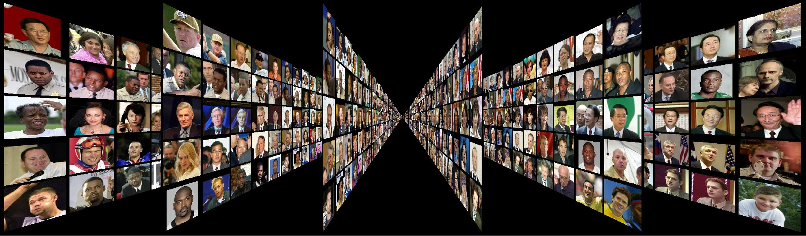

Labeled Faces in the Wild
Welcome to Labeled Faces in the Wild, a database of face photographs designed for studying the problem of unconstrained face recognition. The database contains more than 13,000 images of faces collected from the web. Each face has been labeled with the name of the person pictured. 1680 of the people pictured have two or more distinct photos in the database. The only constraint on these faces is that they were detected by the Viola-Jones face detector. More details can be found in the technical report below.
last updated: 2007/11/21 1:30 PM EST
change log
- Mailing list:
- If you wish to receive announcements regarding any changes made to the LFW database, please send email to majordomo@cs.umass.edu with the message body: "subscribe lfw" on a single line.
Explore the database:
Download the database:
- Training, Validation, and Testing:
-
- View 1:
- For development purposes, we recommend using the below training/testing split, which was generated randomly and independently of the splits for 10-fold cross validation, to avoid unfairly overfitting to the sets above during development. For instance, these sets may be viewed as a model selection set and a validation set. See the tech report below for more details.
Explore the sets:
[training][test]
Download the sets: pairsDevTrain.txt, pairsDevTest.txt, peopleDevTrain.txt, peopleDevTest.txt
- View 2:
- As a benchmark for comparison, we suggest reporting performance as 10-fold cross validation using splits we have randomly generated.
Explore the sets:
[1][2][3][4][5][6][7][8][9][10]
Download the sets: pairs.txt, people.txt
For information on the file formats, please refer to the README above.
For details on how the sets were created, please refer to the tech report below.
Information:
- 13233 images
- 5749 people
- 1680 people with two or more images
- Reference:
- Please cite as:
Gary B. Huang, Manu Ramesh, Tamara Berg, and Erik Learned-Miller.
Labeled Faces in the Wild: A Database for Studying Face Recognition in Unconstrained Environments.
University of Massachusetts, Amherst, Technical Report 07-49, October, 2007.
[pdf]
- Contact:
- Questions and comments can be sent to:
Gary Huang - gbhuang@cs.umass.edu
- Change History:
-
- 2007/11/21
- Added revised version of technical report.
- 2007/11/19
- Added technical report to page.
- 2007/11/15
- Added mailing list and change history to page.
The building of the LFW database was supported by NSF CAREER Award number 0546666.